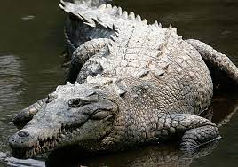

A través de este sitio "web" podrá conocer a nuestros animales, su historia, y al equipo humano de profesionales que los cuida velando por su calidad de vida, además de algunos de los proyectos y trabajos realizados a lo largo de los más de treinta y cinco años de nuestra existencia, tanto en el campo escénico-audiovisual, como en el divulgativo y medio-ambiental.
Serpientes
Dentro de un grupo tan diverso como los reptiles, en Costa Rica las serpientes representan alrededor de dos terceras partes de estos animales. Se han identificado 11 familias de serpientes, de las cuales tan solo dos se consideran «potencialmente letales» para el ser humano. Así, de las 140 especies presentes en el territorio costarricense, solo 23 se consideran venenosas.
Nombre común: bocaracá manchada
Es una serpiente pequeña con un promedio en los adultos de 50 a 60 cm, su cuerpo es delgado a medianamente robusto, con la cabeza grande, ancha y bien diferenciada del cuello. Se observan de 1 a 3 (usualmente 2) prolongaciones puntiagudas en las escamas sobre el ojo (supraoculares), que son proporcionalmente más pequeñas que su similar Bothriechis schlegelii. Su color dorsal de fondo es altamente variable, pero no presenta pigmentación secundaria y únicamente se observa una serie de diseños polimórficos bien definidos de color café claro a oscuro, rojizo o verde oliva claro.
Nombre común: toboba costarricense
Serpiente pequeña, con una longitud máxima conocida de 60 cm, su cuerpo es delgado a medianamente robusto, con la cabeza grande y ancha, bien diferenciada del cuello. Presenta un par de escamas internasales alargadas y la escama rostral tiene una discreta elevación.

Cocodrilos
En Costa Rica hay dos especies distintas: el cocodrilo americano (que puede atacar a los humanos) y el caimán (que no es realmente una amenaza para los humanos).
Costa Rica tiene la mayor concentración de cocodrilos americanos. Puede ver estos monstruos de 4 a 6 metros de largo en el puente de Tárcoles (los guías ofrecen excursiones en barco), en el estuario de Tamarindo o en parques nacionales como Palo Verde o Tortuguero. Los caimanes son un poco más difíciles de ver.
Nombre común: Cocodrilo americano
El cocodrilo americano puede medir hasta 6 metros de largo y pesar más de 900 kilogramos. Suelen encontrarse en grandes ríos y lagos, pero también pueden vivir en agua salada (pueden encontrarse en algunas playas) y nadar hasta 100 km en el océano de río a río.
Nombre común: Caimán de anteojos
El caimán se distingue por la presencia de una cresta ósea entre y delante de los ojos, parecida a unas gafas, de ahí su nombre. Además, en el cocodrilo americano, los dientes de la mandíbula inferior sobresalen visiblemente cuando el hocico está cerrado; en cambio, los dientes del caimán están ocultos.
Tortugas
Uno de los espectáculos naturales más sorprendentes que sucede en Tortuguero es la llegada de las Tortugas Marinas, que encuentran un paraíso en las playas de Tortuguero. La Tortuga Verde viene y pone huevos, que luego eclosionan y cientos de miles de pequeñas tortugas marinas dejan sus nidos para entrar en el océano y continuar el ciclo.
Nombre común: Tortuga Verde
Una de las especies más abundantes, llega a la costa caribeña de julio a septiembre (también de julio a octubre). Infórmese sobre nuestros paquetes personalizados de tortugas marinas para explorar la región. Visitas guiadas nocturnas disponibles en el sitio.
Nombre común: Tortuga Baula / Tortuga Laud
La Baula es la especie más grande del mundo. Solía llegar a la costa del Pacífico Norte, hoy en día, en menor cantidad. También se puede observar a lo largo del Caribe con abundancia entre marzo y julio.